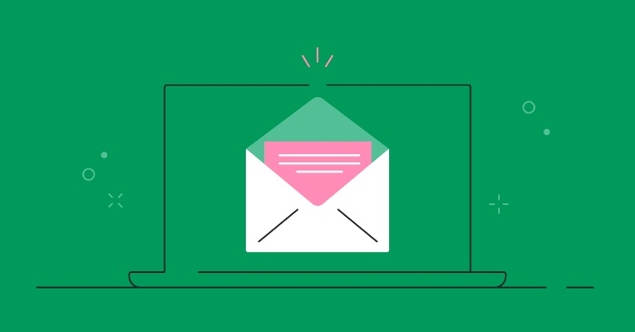
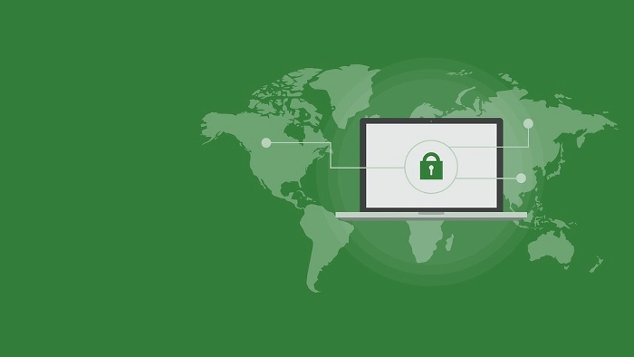

What Is DMARC And Why Do You Need It In Your Email Strategy
Domain-Based Message Authentication, Reporting, and Conformance is abbreviated to DMARC. DMARC is an authentication protocol that checks SPF and DKIM to determine whether an email is genuine or not. DMARC places the responsibility in the hands of domain owners to sanction how non-reportable emails are dealt with.
DMARC only works if it's placed in the DNS records of a domain. DMARC protects against the two biggest threats related to email safety, which are referred to as spoofing and phishing. An individual that is in charge of a domain or a brand can get more authority over which senders are legitimate, or allowed to send e-mail in their name. This includes bulk sources and other third-parties who are permitted to send email using a domain name.
Why is this important?
SMTP protocol has had flaws since its creation, namely due to the fact that no specific procedure was created to accept only valid email. DMARC ensures a value from being used in a variety of BEC (Business Email Compromise) attacks, spoof emails, email scams, and other cybercriminal activities.

1. DMARC puts trust back into email.
Until your domain name is protected with email authentication protocols such as DMARC (and SPF and DKIM), anyone can send you email from that domain. To ensure that no one can send you emails from you, except you, it's important to utilize email authentication protocols.
2. Gartner listed DMARC among the top 10 security projects.
DMARC combines the SPF and DKIM protocols to create a system that turns various SPF and DKIM fields into a URL's uniqueness proof.
History of DMARC
DMARC standard was established in 2012 to prevent email abuse that was not being addressed by SPF and DKIM standards that were previously in use for 15 years. It was developed by industry leaders such as PayPal, Google, Microsoft, and Yahoo.
DMARC works based on SPF and DKIM at the DNS level and was originally created as a protocol developed for online security. DMARC adoption rates globally are low, but its significance has made it compulsory for governing bodies to carry it out for member organizations. DMARC functions as a security measure to avoid spoofing and boost email deliverability to maximize the return on an organization's most significant asset, email marketing.
How Does DMARC Help?
This indicates DMARC has been endorsed by the biggest email providers and email suppliers worldwide. This includes Yahoo!, Google, and Microsoft, accounting for about 80 percent of the consumer inboxes on the planet.
DMARC ought to be used in that it gives companies full control of the way it functions. The company may also ask that the receivers take specific actions if the incoming e-mail isn't legitimate and report the incident back to the company for further analysis.

Making certain the particular person getting the email notifies their network about most of the factors a secure DMARC setup is capable of, this method prevents people from being deceived because of the email. Putting DMARC into action allows parties to work more efficiently by preventing this from happening.
Benefits of DMARC
Email users will be enhanced with DMARC. When strong security controls are set up to protect against fraudulent messages, delivery is simplified, brand consistency increases and visibility is given to domain owners regarding how their domains are being used on the Internet.
- Security : Protect your customers from spam, fraud, and phishing by disallowing unauthorized use of your email address.
- Visibility: Gain insight into who and what on the web is using your email account.
- Delivery: Use some of the same plumbing that companies with large budgets use to deliver email.
- Identity: Make sure that your domain is easy to read in a wide variety of email clients.
In summary, DMARC is an authentication and authorization protocol that authenticates email senders and trailers. DMARC provides a uniform method for organizations to define policies for their domains, identify unauthorized email, and enable authentication for all email traffic.